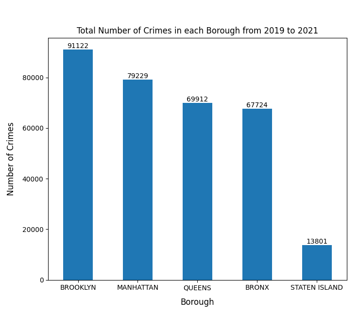

This project is an attempt to raise awareness of the crimes in NYC. I want to display the data on a map to identify any hotspots for crimes or identify any trends. Also, whether COVID increases the number of crimes in NYC. Since COVID, there has been an abundant amount of shocking hate crimes and it has affected me on a personal level. I want to contribute in some way to help the community.
Data
NYC OpenData: NYPD Complaint Data
is a dataset of every arrest in NYC ranging from misdemeanor, larceny, to different violation crimes. It includes columns like BORO_NM (the types of borough) which is important to create the bar graph and choropleth maps. The CMPLNT_FR_DT which is the exact date of the occuring crime to make the line graphs. The longitude and latitude to make the folium maps.
Techniques
PandaSQL to filter the dataset to get the desired columns
Matplotlib.pyplot to create the bar graphs and line graphs
Plotly Express and GeoJSON to make the choropleth maps
Folium library to make the maps with markers

Line graphs comparing the number of crimes in 2019, 2020, and 2021